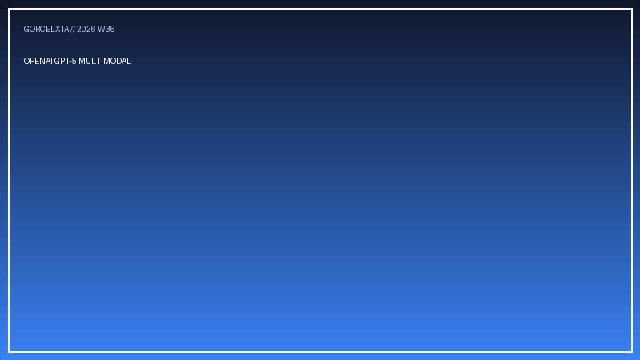

OpenAI presenta GPT-5: Razonamiento multimodal adaptativo y agentes autónomos
La nueva arquitectura integra cadena de pensamiento adaptativa en tiempo real, reduciendo alucinaciones en un 85% y permitiendo a agentes completar tareas de ingeniería de software complejas sin intervención humana.
Leer artículo completo